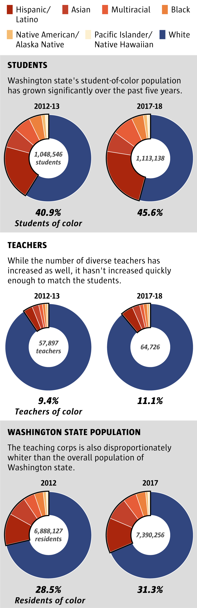
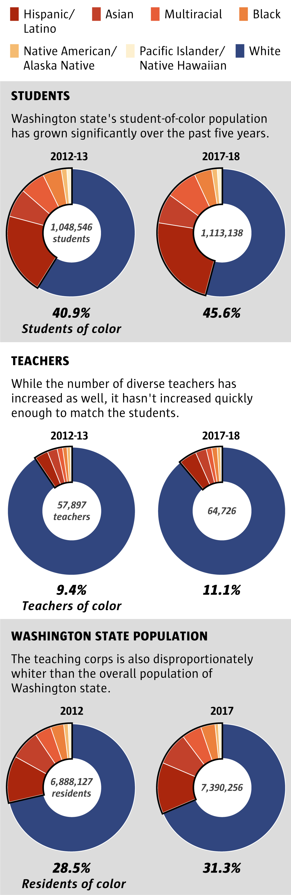

By
By Published December 7, 2018
<%= t.renderMarkdown(archieml.teacher.section1) %>
<%= t.renderMarkdown(archieml.teacher.section2) %>
Teachers of color still a rarity in a diversifying state
 

Sources: Office of the Superintendent of Public Instruction, American Community Survey (2012, 2017)
Emily M. Eng / The Seattle Times
Emily M. Eng / The Seattle Times
<%= t.renderMarkdown(archieml.teacher.section3) %>
How many more teachers would it take to achieve parity?

Source: Office of the Superintendent of Public Instruction (2017-18)
Emily M. Eng / The Seattle Times
Emily M. Eng / The Seattle Times
<%= t.renderMarkdown(archieml.teacher.section4) %>
<%= t.include("_map.html") %>
<%= t.renderMarkdown(archieml.teacher.section5) %>
Sources: Office of the Superintendent of Public Instruction, American Community Survey (2012, 2017)
Emily M. Eng / The Seattle Times
Emily M. Eng / The Seattle Times
<%= t.include("partials/_ad.html", { type: "square" }) %>
<%= t.renderMarkdown(archieml.teacher.section6) %>
<%= t.include("_tabs.html") %>
<%= t.renderMarkdown(archieml.teacher.section7) %>

Sources: Office of the Superintendent of Public Instruction, American Community Survey (2012, 2017)
Emily M. Eng / The Seattle Times
Emily M. Eng / The Seattle Times
<%= t.renderMarkdown(archieml.teacher.section8) %>